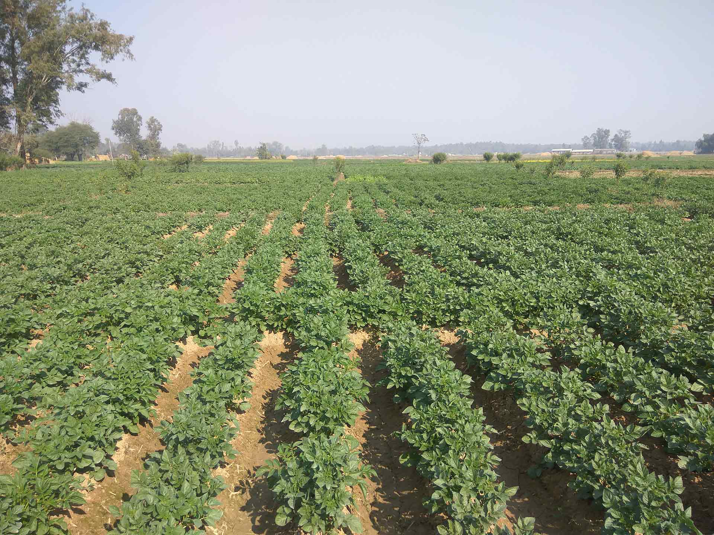

Collect
Record implementation, output, financial and indicator information from field activities.
RISMFP project monitoring system
Explore how the historical RISMFP Web MIS was intended to organise field activities, financial records, monitoring indicators, management decisions and project knowledge.

The management challenge
Activities were carried out by consultants, NGOs, service providers, farmer groups, cooperatives, agribusinesses, committees and associations in different locations.
Record implementation, output, financial and indicator information from field activities.
Structure information around components, activities, locations and indicators.
Identify progress, delays, compliance gaps and implementation problems.
Keep reports, reference material and project knowledge available in one system.
System scope
The retained description presents the MIS as both a monitoring tool and a central knowledge resource. This archive does not confirm how completely the system was implemented.
A web interface intended to review project progress against activities, indicators and the agreed monitoring framework.
A connected library intended to categorise and preserve material produced by the project and its service providers.
Interactive architecture
Use the controls to fit, zoom or open the diagram in fullscreen. Drag to pan after zooming, or read the equivalent text description below.
Information flow
The sequence below is a concise reading of the historical MIS description, not evidence of current system operation.
Activities and outputs are recorded by organisations carrying out the work.
Information is organised by activity, location, component and monitoring indicator.
Project teams review progress, issues, compliance and use of allocated funds.
Reports and retained documents support decisions, accountability and future reference.